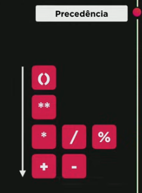
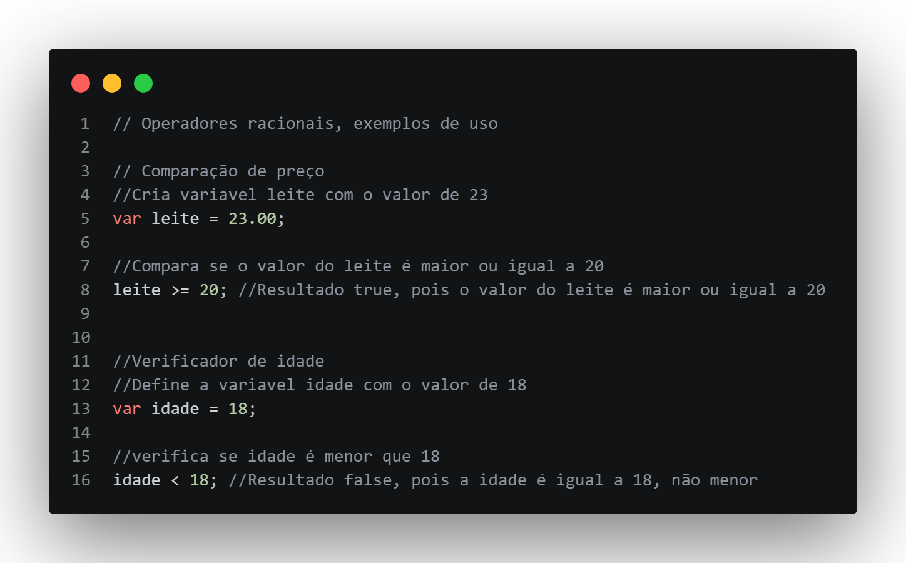
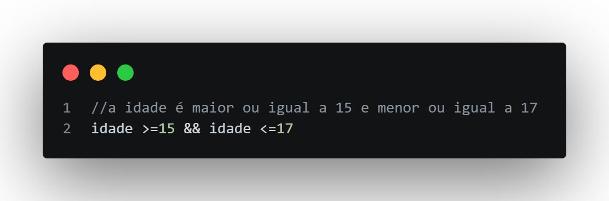
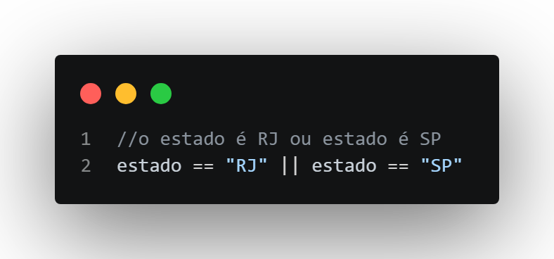
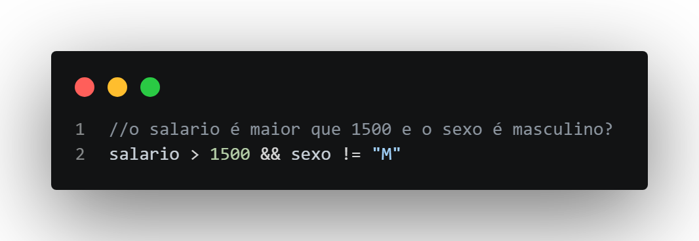
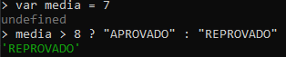
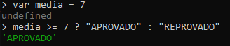

Operadores Aritimeticos
os operadores aritimeticos são os de matematica que aprendemos na escola, adição, subtração, etc.
em Js eles são o seguinte:
| + | Adição | 5+2=7 | Soma dois números |
| - | Subtração | 5-2=3 | Subtrai o segundo número do primeiro |
| * | Multiplicação | 5*2=10 | Multiplica dois números |
| / | Divisão | 5/2=2.5 | Divide o primeiro número pelo segundo |
| % | Resto | 5%2=1 | Retorna o resto da divisão |
| ** | Potencia | 5**2=25 | Eleva o primeiro número à potência do segundo |
Atenção o Js ao fazer operações segue a ordem que aprendemos, primeiro divisão e Multiplicação para depois adição e subtração, por exemplo:
5+3/2=x primeiro ele divide o 3/2
5+1.5=x depois ele faz a soma de 5+1.5
x=6.5 e obtem o resultado final
sendo assim preste Atenção ao formular a forma de conta, para este exemplo a cima, podemos resolver facilmente como a matematica nos ensina, usando parenteses, observe:
(5+3)/2=x
8/2=x
x=4
Precedencia de operações
É importante observar a ordem na qual o JavaScript faz suas operações, observe a imagem da ordem correta

Incremento
Incremento é aumentar o valor de uma variável. Por exemplo:
var x = 5; x = x + 1; x = x + 1; // x agora é 7
Formas mais curtas em JavaScript:
var x = 5; x += 1; // x = 6var x = 5; x++; // pós-incremento, x vira 6var x = 5; ++x; // pré-incremento, x vira 6
Observação: x++ retorna o valor antes do incremento, ++x retorna o valor após o incremento.
Operadores Relacionais
Os operadores relacionais são aqueles que na matematica server para comparar um parametro com outro, por exemplo, "maior que"; "menor que"; "diferente de"
vale lembrar que, a respostas dessas operações sempre retornam um valor booleano, ou seja, Verdadeiro ou Falso
Observe a tabela a baixo:
| Caractere | Significado | Exemplo | Retorno |
|---|---|---|---|
| > | Maior que | 5 > 2 | True |
| < | Menor que | 5 < 2 | False |
| >= | Maior ou igual | 5 >= 2 | True |
| <= | Menor ou igual | 5 <= 2 | False |
| == | Igual a | 5 == 2 | False |
| != | Diferente de | 5 != 2 | True |
Exemplos de uso

OBSERVAÇÃO: o Js tem tambem Operador de identidade, a função dele é verificar se o dado é exatamente igual ao valor pedido, por exemplo:
5 == "5" o Js vai ver que um lado é number e automaticamente converte o outro pra number tambem, sendo assim o resultado é true, o literal o Js faria da seguinte forma:
5=="5"?
5==num("5")?
(resultado == true)
isso pode parecer algo bom, pois é só jogar uma string que o JavaScript converta pra number, mas as vezes precisamos do literal, ou seja, precisamos que o number seja realmente um number, para isso usamos o operador ===, ele vai identificar a literalidade do valor, ou seja, ele verá string como string e number como number, observe:
5==="5"? false pois "5" é string e ele espera um number
5===5? true pois 5 é realmente identico ao valor pedido
Sendo assim, é indicado em certas funções usar sempre ===, pois ele busca a literalidade do valor pedido e não somente o valor convertido, mas Lembre-se!, não existe operador de identidade para <, >, <=, >=, eles são eles mesmos
Operadores Lógicos
os operadores logicos são:
! (negação), && (conjunção), || (Disjunção).
Eles servem para operações logicas simples, por exemplo:
1-Preciso de uma caneta qualquer menos a azul.
Operador usado: ! (negação) a pessoa pediu qualquer caneta, menos a azul, ou seja, ela nega algo.
2-Quero uma caneta Azul e Preta
Operador usado: && (conjunção) a pessoa pediu uma caneta azul e preta, ou seja, ela quer uma e a outra, ela estará satisfeita se entregar a azul e a preta
3-Quero uma caneta Azul ou Preta
Operador usado: || (disjunção) a pessoa pediu uma caneta azul ou preta, ela define quais canetas quer, seja azul ou seja a preta, mas ela delimitou que é azul ou preta, tanto faz, desde que esteja dentro desse parametro
Trabalhando com operadores logicos
Vamos observar a tabela e ver como seria o uso dos operadores usando funções:
| Operador | Entrada | Logica | Saida | resposta |
|---|---|---|---|---|
| !(negação) | → | ! | true | false |
| false | true | |||
| &&(conjunção) | true | && | true | true |
| true | false | false | ||
| false | true | false | ||
| false | false | false | ||
| ||(disjunção) | true | || | true | true |
| true | false | true | ||
| false | true | true | ||
| false | false | false |
Observando a tabela, chegamos a seguinte conclusão:
! se sair true or false é só inverter
%% só funciona se os dois for true
|| basta um ser true que da certo
Exemplos
para entendermos um pouco melhor vamos escrever as expressões e coloca-las em codigo
1- a idade esta entre 15 e 17 anos?

2- o estado é RJ ou SP?

3- o salario é maior que 1500R$ e o sexo é masculino?

Operador Ternario
e finalmente pra fechar essa matéria deveras extensa, temos o operador ternario, é quase um if e else em python, ele funciona da seguinte forma:
| teste | ? | true | : | false |
ele diz o seguinte: se o teste for true faça A, se for false faça B
| nota >= 7 | ? | aprovado | : | reprovado |
essa função quer dizer o seguinte se a media for maior ou igual a 7 (?) o aluno é aprovado, caso o contrario (:) o aluno é reprovado
no exemplo colocaremos um aluno com média 7 e daremos dois parametros, se media for maior que 8 é aprovado, e o segundo parametro é se media for igual ou maior que 7, é aprovado, nos dois casos, se for diferente é reprovado.
vamos ver no terminal de como ficaria:
media maior que 8

media maior ou igual a 7

observe que o codigo verifica se a função esta correta ou não e da a resposta correspondente